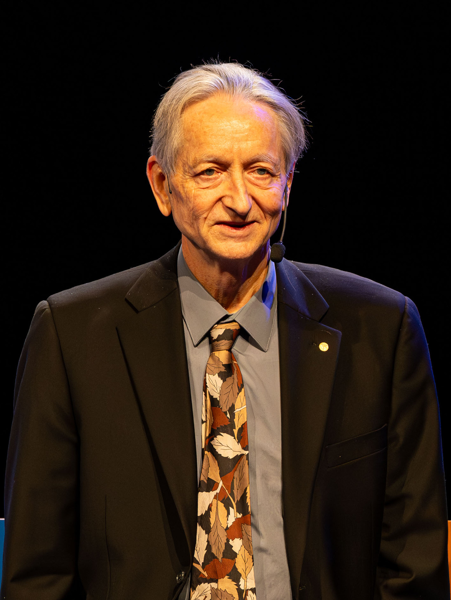

Tino Schuldt
I learn and build across industry, space, art, culture, software, hardware and ideas.
Projects
Acupet
I helped inspire the early development of the Acupet app and accompanied parts of the long and often rocky path toward publication.
Articles

The Making of Modern AI
A compact overview of the key conceptual jumps, papers, and people from the first formal neuron to modern language models.